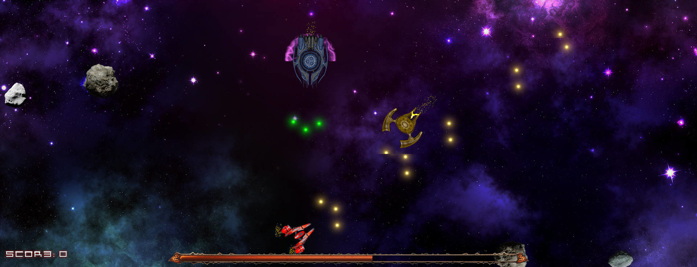
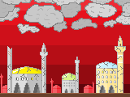
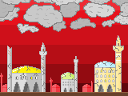

Until the 1960s scientists could not explain how termites manage to organise their activity to gather and pile up
in one place all the wood pieces they find. Different theories tried to explain this like unaudible languages, but
the truth was that they just followed simple rules, from which emerged a complex behaviour.
By taking a piece of wood when they encounter it and dropping it when they encounter another one the termites
move the pieces to one or more piles, which in turn also get combined into bigger piles. The result is cleared
areas and compact piles.
A wooden robot that is an arm on tank tracks. The tracks were 3D printed and the wooden structure is made from glued sticks.
A raspberry controls with Python the 4 servos of the arm and the 2 for the tracks.
>Virtual Evil
_November_2015_-_June_2016cyberpunkLibGDXcomputer art
A cyberspace game made using LibGDX and Java 8. Fight against the AI overlord of a system gone rogue, navigate your way in barren
artificial landscapes and try to comprehend where reality bleeds into virtuality. Made together with
Bozhidar Hrusanov.
_December_2015pen and paperhistorical gamescasual DnD
A tabletop historical role-playing game. The pdfs can be printed on paper and cut into cards. The story takes place in the late 1860s
in the land of the Bulgarian people. The mechanics are like a soft casual DnD one shot. There are many historically accurate weapons,
fun facts and small doses of history, different places, characters, abilities for the players to choose, riddles and mysteries,
action and combat, calm sceneries of nature's beauty.
>Invade yer space
_March_-_May_2015UX
Java 2D space invaders game, but with a story twist. Captain Manol, a pirate captain, had his ship fleet sunken after a confrontation with the
invading aliens, but managed to get hold of one of theirs. Now his mastery of sailing leads him on a revenge to invade the aliens' space.
I wanted to experiment with user experience: animations, notifications and sounds.
A Java 2D asteroids game with spaceships based on rotating around and having to manage your velocity and acceleration.
It has different enemies which use different attack strategies. Made together with
Bozhidar Hrusanov.

>You are the Defender
_April_2014mini gamestext-based
I wanted to make a fantasy game with a lot of freedom and especially less popular features or actovities to do. Things like gambling,
playing minigames, praying to different deities, eating and drinking, ordering said food and beverages, talking with npcs without the
purpose of getting something for it. This combined with the lack of epicness of the setting made it feel more ordinary and calm.
>Bubble Rebel
_April_2013competition
A 2D game written in 2 days and a half in C++ for admission to a uni programme. The theme of all games was "bubbles".
In the game you compete with the evil bubble to collect more bathroom bubbles and become the biggest bubble.
2D tiled fantasy game written in C++ with Allegro 4. The game has an inventory system, abilities and cooldowns, multi-layer
map and map editor, character stats and an enormous map that is visibly chunked, npcs to talk to. It taught me basics of OOP,
rendering 2D graphics and using arrays of pointers.
>Beyond the next dimension
_October_2010_-_February_20123DFPS
A 3D shooter. The sprites from Doom made it grim and gory, while the other ripped weapon images made it feel like a violent collage.
The simple geometry of the levels and doors added a good bit of amateurism. Building this game allowed me to apply
knowledge in trigonometry and stereometry. Made with GM7 and Blender while following a book tutorial.
My first C++ game - a text-based fantasy RPG with many different enemies, combat scenarios and outcomes.
>Dimension Traveller Pesho
_2009_-_2010platformerbosses
A platformer with a crazy amount of levels. The last released version is lost, but this one has most of the levels and all of
the bugs. The goal was to have a variety of levels not fitting with eachother and not constrained by story. Most bosses have
unique mechanics and theme.
Placed next to a temple, the sprinklers move in tact to a music and lights colour the water in vivid hues. Nice way to
experience music.
>Tent in Daan Park in Taipei
Next to a pond with an island with frogs on the stones. The shade and green surrounding are a nice place to do
some work on projects in a relaxing atmosphere.


 
